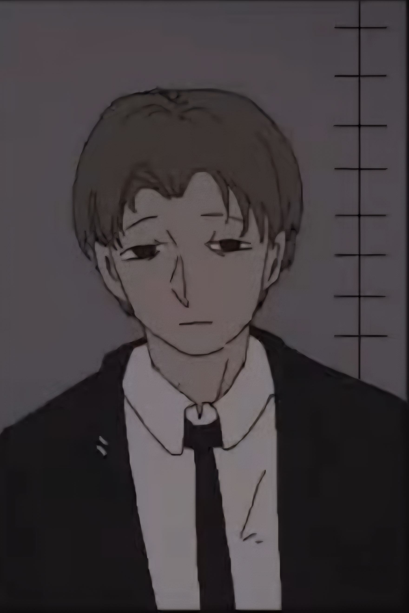
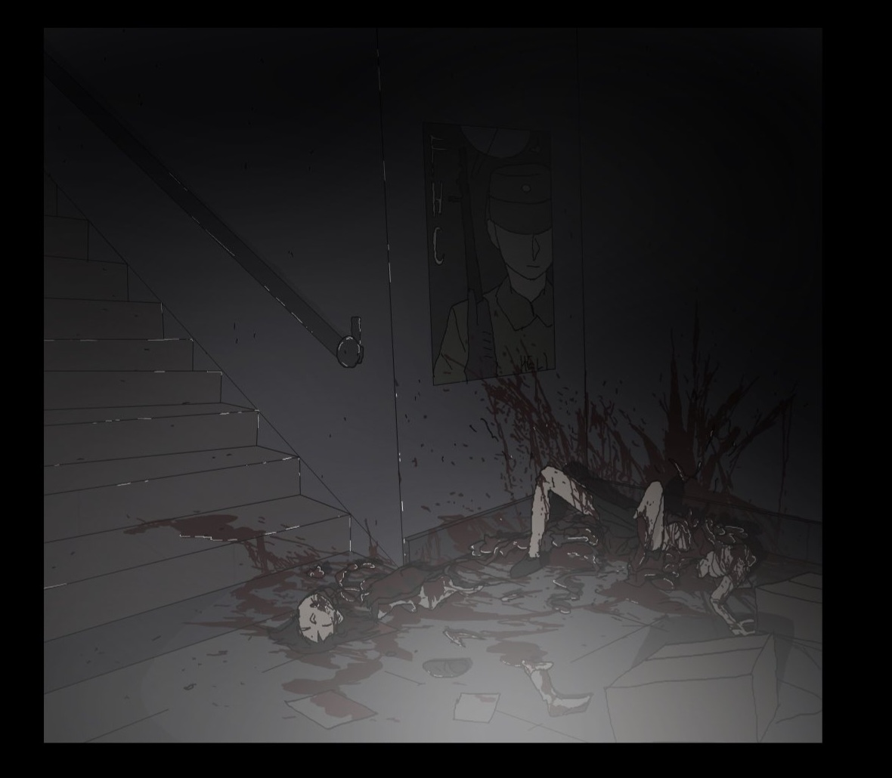
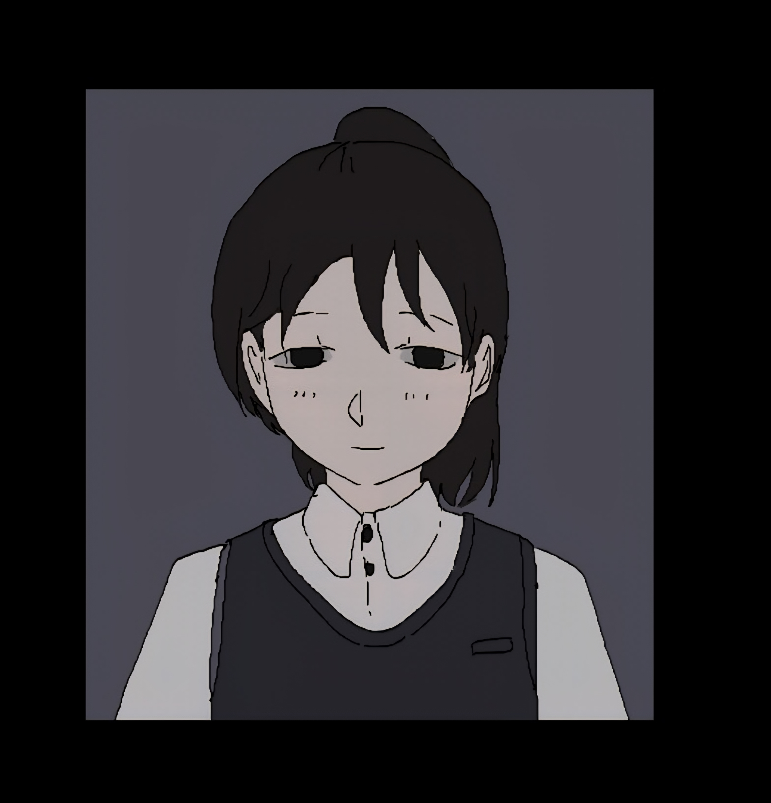
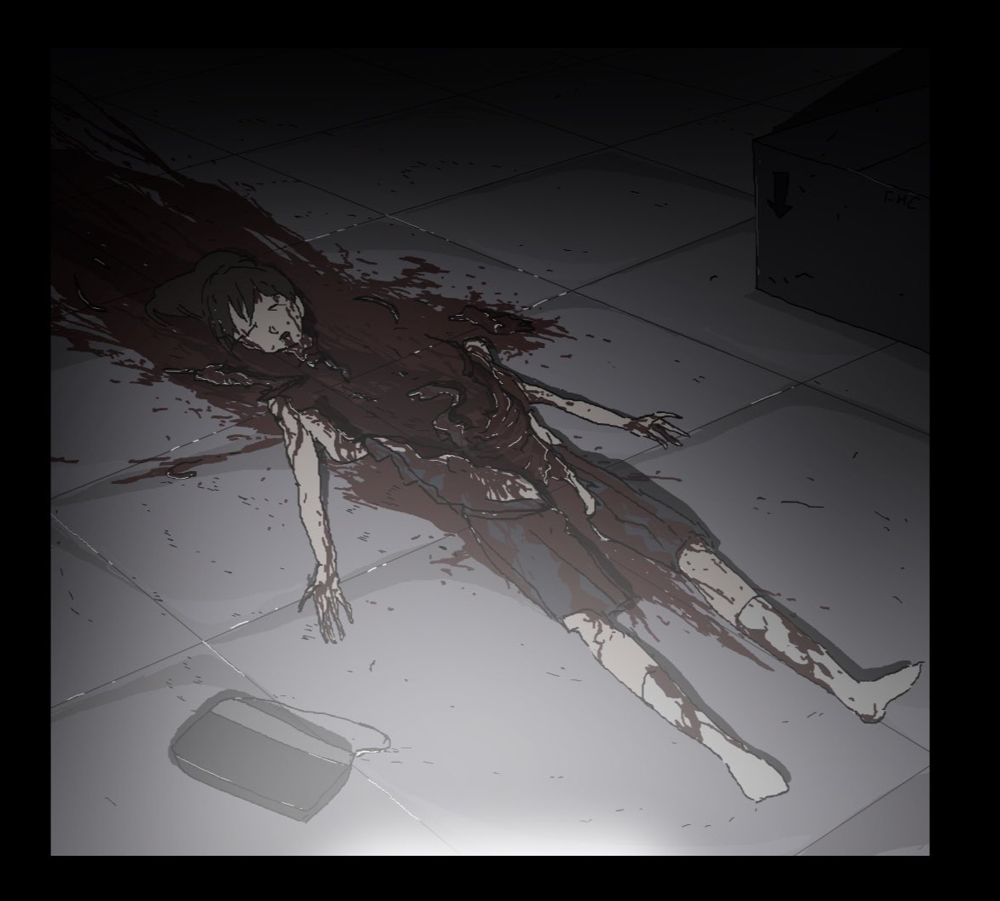
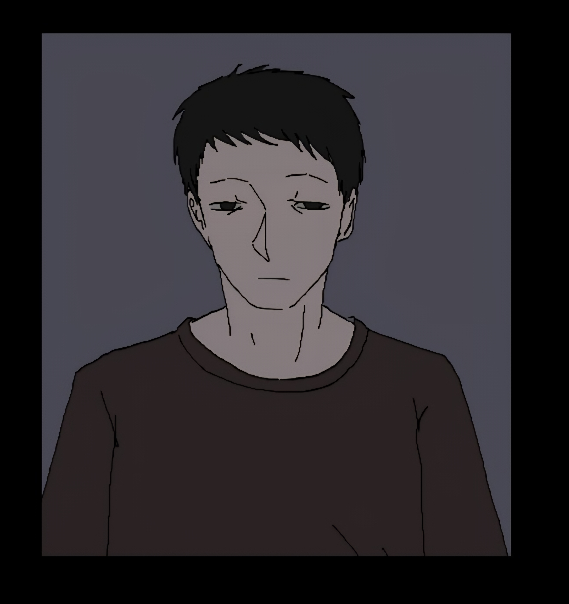
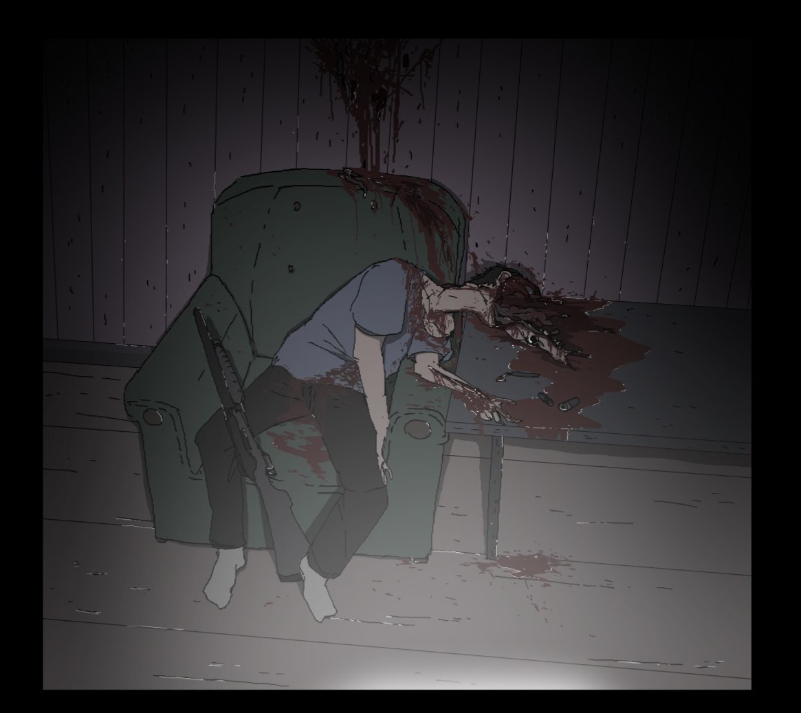
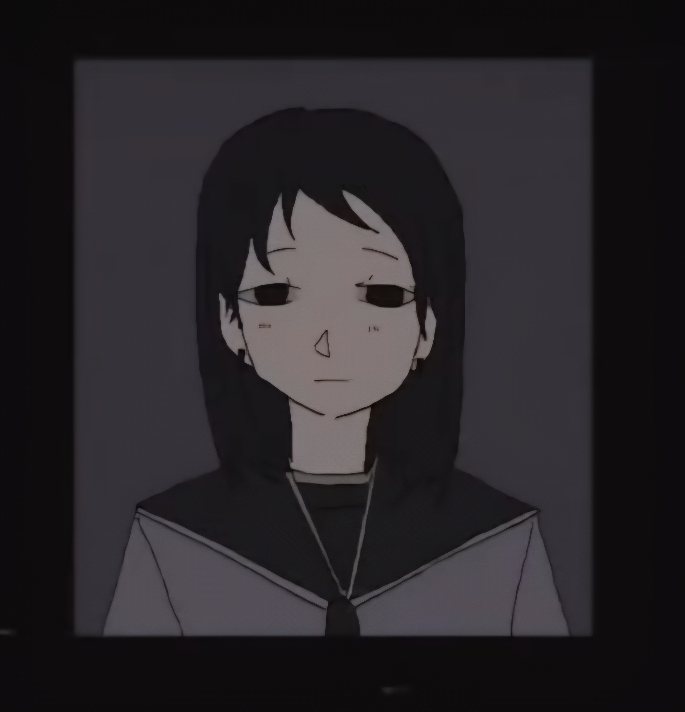
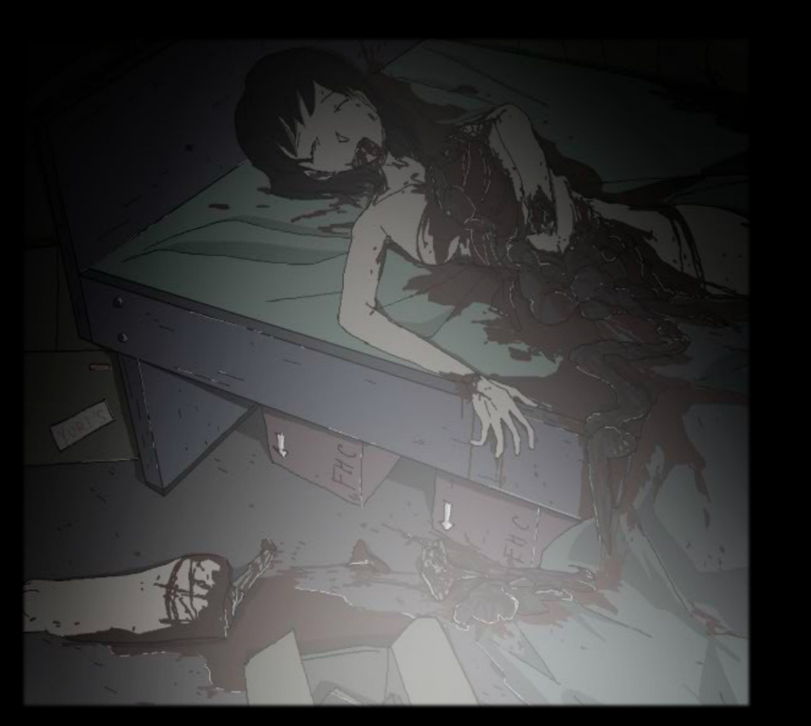
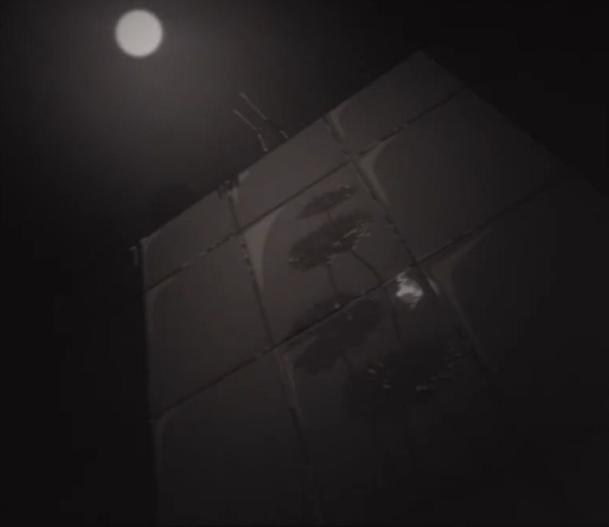
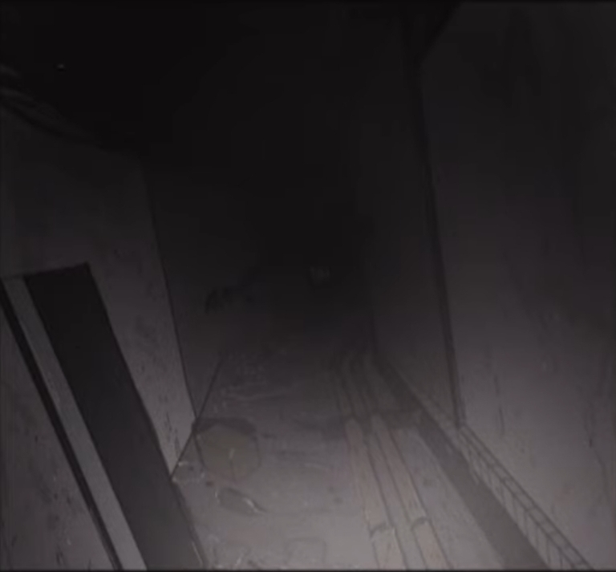

Sakuma Tape_991028
| ARCHIVE CODE | Sakuma Tape_991028 |
| INTERNAL INDEX | PC-SID-005 |
| ACCESS LEVEL | RESTRICTED / LOCAL STATIC EXPORT |
| CLASSIFICATION | INCIDENT / RECOVERED FILE |
| ORIGIN TITLE | 사쿠마 유타 실종 사건 보고서 |
| ATTACHMENTS | 12 |
AUDIO LOG // 16b74a6d9fb1.mp3
사쿠마 유타 실종 사건 보고서
Sakuma Yuta Disappearance Case Report
주의⚠️
본 자료는 S.I.D 오컬트 부서의 기밀 내용으로 분류되어 있으며, 열람 시 담당 관계자와 동행하여 확인해야 한다
해당 문서는 S.I.D 일본 도쿄 지부에서 관리하던 오컬트 사건 기록이며, 토센 고등학교를 중심으로 발생한 연쇄 피해 사건과 현장 조사 담당자 사쿠마 유타의 실종 정황을 정리한 보고서이다
본 사건은 단순 살인 사건이 아니라, 우시노다교 관련 문서, 의식 흔적, 정신 오염 가능성, 미보고 피해자 사진 발견과 연결된 고위험 오컬트 사건으로 분류된다
기록 정보
문서 분류
분류명:사쿠마 유타 실종 사건 보고서
영문명:Sakuma Yuta Disappearance Case Report
기록 형태:오컬트 사건 보고서 / 실종 기록 / 피해자 조사 문서
소속:S.I.D 일본 도쿄 지부
담당 부서:오컬트 부서
기록 연도:199x/xx/xx
작성자:키무라 쿄 / 사쿠마 유타
보안 등급:기밀
위험도:High
사건 개요
토센 고등학교 및 그 주변 지역에서 원인을 특정하기 어려운 연쇄 사망 사건이 발생하였다
피해자들은 대부분 심각한 신체 훼손, 비정상적인 혈흔, 내부 파열, 자살로 위장된 사망, 의식 흔적과 함께 발견되었다
일부 현장에서는 우시노다교 신자에게 주어지는 것으로 추정되는 서적과, 동물의 피와 살점, 원형으로 배열된 문자 흔적이 확인되었다
초기에는 심각 범죄 사건으로 분류되었으나, 피해자들의 상태와 현장 흔적이 일반적인 범죄 양상과 일치하지 않아 S.I.D 오컬트 부서가 사건을 인계받았다
사건 조사 도중 현장 조사 담당자였던 사쿠마 유타가 실종되었으며, 이후 그의 자택에서 보고되지 않은 괴이 피해자들의 사체 사진이 다수 발견되었다
담당 인물
사쿠마 유타

S.I.D 일본 도쿄 지부의 오컬트 부서에 고용된 사설 탐정이다
전직 형사였으며, 도쿄 지부에서 우시노다 현상이 발생한 후 사임하고 건강 문제로 휴식 중에 있었다
이후 S.I.D 오컬트 부서의 요청으로 현장 조사 담당을 맡게 되었다
사쿠마 유타는 피해자 주변 인물 조사, 현장 기록 수집, 우시노다교 관련 흔적 확인, 미확인 피해자 자료 대조를 담당하였다
키무라 쿄
S.I.D 일본 도쿄 지부 오컬트 부서의 특수 효과 및 분석 담당자였으며, 현재는 이상 현상 및 심각 범죄 현장을 조사하는 오컬트 팀 부서의 팀장을 맡고 있다
본 사건에서는 현장 자료 분석, 의식 흔적 판독, 피해자 관계 기록 정리, 사쿠마 유타의 조사 자료 검토를 담당하였다
S.I.D 일본 도쿄 지부 오컬트 부서 소속 특수 효과 및 이상 현상 분석 담당자.
이전에는 현장 특수 효과 분석과 괴이 흔적 판독을 담당했으며, 현재는 심각한 범죄 현장 및 이상 현상 사건을 조사하는 오컬트 팀의 팀장을 맡고 있다.
키무라 쿄는 사쿠마 유타와 공동으로 토센 고등학교 사건을 조사하였으며, 이후 사쿠마 유타의 상태 악화와 실종을 최초로 내부 보고한 인물로 기록되어 있다.
피해자 기록
피해자 명단
요키아와 카나
[토센 고등학교 2학년]

방과 후 시간대에 동아리 활동을 완료하고 정리를 하고 있던 것으로 추정된다
피해자는 무언가로부터 습격당해 온몸이 찢기고 뜯긴 채로 발견되었다

현장에는 방어 흔적이 일부 확인되었으나, 공격 개체 또는 가해자의 명확한 흔적은 발견되지 않았다
피해자의 사망 상태는 일반적인 흉기 사용이나 야생 동물 습격과 일치하지 않는다
마사토 코마
[토센 고등학교 1학년]

피해자의 몸 안에서 무언가가 몸을 찢고 나와 바닥을 기어간 듯한 다량의 핏자국이 확인되었다
혈흔은 교실 바닥과 복도 일부에 이어져 있었으며, 현장에는 내부 장기 손상과 비정상적인 찢김 흔적이 남아 있었다

현 학교 내의 학생과 교사, 일용직 담당자, 주변 인물에 대한 추가 조사가 필요하다고 판단되었다
상부에 피해자 관계 인물에 대한 추가 조사 요청 승인 완료됨
카이토 렌
[유시마 대학교 학생]
[토센 고등학교 졸업생]

피해자는 자택에서 엽총으로 스스로 머리를 쏴 자살한 것으로 추정되었다
그러나 자택 조사 결과, 책장 안에서 우시노다교 신자에게 주어지는 것으로 추정되는 책 한 권이 발견되었다

벽에는 수많은 글자가 낙서처럼 이곳저곳 휘갈겨져 있었으며, 일부 문자는 기존 사건 현장에서 발견된 의식 문자와 유사한 형태를 보였다
자살 이전 피해자가 정신 오염 또는 의식성 암시에 노출되었을 가능성이 제기되었다
타케미 유이
[토센 고등학교 교사]
[휴직 중]

피해자는 자택 침대 위에서 몸이 대각선으로 동강난 채 발견되었다
바닥에는 이전 피해자와 동일하게 우시노다교 신자에게 주어지는 것으로 추정되는 책들이 놓여 있었다

또한 바닥에는 각종 동물의 피와 살점이 흩어져 있었으며, 여러 문자들이 원형으로 그려져 있었다
현장 구조상 피해자는 무언가를 소환하고 스스로를 제물로 바친 것으로 추정된다
기타 피해자
이외 52명의 피해자에 대한 내용은 동일한 카테고리의 세부 피해자 기록을 확인해야 한다
공통적으로 다음 요소가 확인되었다
- 비정상적인 신체 훼손
- 일반 범죄로 설명하기 어려운 사망 방식
- 우시노다교 관련 서적 또는 문구 발견
- 동물의 피와 살점 사용 흔적
- 의식 문자 또는 원형 배열
- 자살로 위장된 의심 사례
- 피해자 주변 인물의 실종 또는 정신 이상 보고
조사 진행 기록
우시노다교 문서 발견
복수의 피해자 현장에서 우시노다교 신자에게 주어지는 것으로 추정되는 서적이 발견되었다
해당 서적은 일반 출판물로 보기 어려우며, 일부 페이지에는 손으로 덧쓴 문장과 의식 절차로 추정되는 문구가 포함되어 있었다
문서의 내용은 우시노다의 이름, 신체의 해방, 피와 살의 봉헌, 정신의 붕괴, 새로운 형태로의 변화와 관련되어 있다
의식 흔적 확인
일부 현장에서는 동물의 피와 살점이 원형으로 배치되어 있었고, 그 주변에는 불명확한 문자와 상징이 반복적으로 그려져 있었다
해당 배열은 단순한 낙서나 범죄 은폐 흔적이 아니라, 소환 또는 타락 의식의 일종으로 추정된다
S.I.D 오컬트 부서는 해당 현장을 우시노다교 또는 타락교 계열 의식 흔적으로 분류하였다
피해자 관계 인물 조사
피해자들 사이에는 직접적인 관계가 확인되지 않는 경우도 있었으나, 일부 피해자는 토센 고등학교와 유시마 대학교, 그리고 이전 졸업생 관계망 안에서 간접적으로 연결되어 있었다
사쿠마 유타는 이 연결성을 추적하던 중 보고되지 않은 피해자 자료와 사체 사진을 별도로 수집한 것으로 추정된다
사쿠마 유타 실종
실종 확인
사쿠마 유타의 실종이 확인되었다
그는 마지막 보고 이후 S.I.D 일본 도쿄 지부와의 정기 연락을 중단하였으며, 담당자 호출에도 응답하지 않았다
동시에 사쿠마 유타의 아내 사쿠마 히나 의 연락 또한 두절되며 실종되었다.
초기에는 단순 연락 두절 또는 건강 문제로 인한 미보고 휴식 가능성이 검토되었으나, 이후 자택 수색 결과 사건과 직접 연결된 자료가 발견되며 실종 사건으로 재분류되었다
자택 수색 기록
실종된 사쿠마 유타의 자택에서 보고되지 않은 괴이 피해자들의 사체 사진이 다수 발견되었다
사진들은 공식 사건 기록에 포함되지 않았으며, 일부는 S.I.D 데이터베이스에도 등록되지 않은 피해자로 확인되었다
사진의 촬영 위치, 시간, 회수 경위는 불명확하다
일부 사진 뒷면에는 사쿠마 유타가 직접 작성한 것으로 보이는 문장과, 이해할 수 없는 기호가 적혀 있었다
미보고 자료
자택에서 발견된 자료는 다음과 같다
- 미보고 피해자 사체 사진
- 우시노다교 관련 서적 사본
- 피해자 관계도
- 토센 고등학교 내부 구조도
- 유시마 대학교 졸업생 명단 일부
- 의미 불명의 문자 배열
- 검은색으로 칠해진 현장 사진
- 사쿠마 유타의 개인 메모
- 사쿠마 유타 발견 시 단독 접촉을 금지한다.
- 대화 시 이름, 피해자, 우시노다교, 주군과 관련된 단어 사용을 제한한다.
- 그가 소지한 수첩, 사진, 녹음 장비는 즉시 밀봉하여 회수한다.
- 우시노다교 문자가 적힌 자료는 일반 문서로 취급하지 않는다.
- 회수된 자료는 F.H.C 분석 부서로 이송한다.
- 정신 오염이 의심되는 인원은 즉시 격리한다.
기록 종료
본 기록은 사쿠마 유타의 실종 이후 갱신된 내부 자료를 기반으로 작성되었다.
추가 피해자 기록, 현장 사진, 음성 기록, 의식 문서에 대한 접근은 별도 보안 승인이 필요하다.
잔류 문장 기록
사쿠마 유타 개인 메모
자택 내부에서 발견된 메모와 사진 뒷면에는 다음 문장들이 남아 있었다
무언가 내 머리를 쥐어잡고 얘기하는 거 같다
그들이 추구하는 진정한 의미를 깨달았다, 주군이여

갑자기 이곳으로 소환되었다
나의 진실된 행동이 드디어 #%에게 닿은 것이다

생일 축하해, 여보